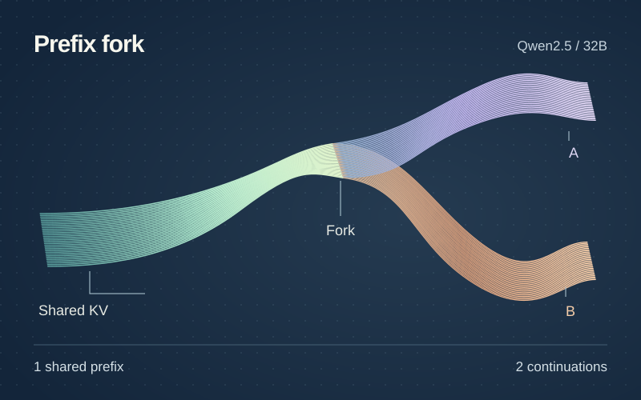

编译器删掉了哪些发射？
四层 BERT 中，让 Q、K、V 共用每层输入的量化结果，再合并三个投影。一次前向的 CUDA kernel 发射由 233 次减到 64 次；八个返回值与量化 eager 逐字节一致。这里数的是发射次数，不代表耗时缩短相同比例。
看编译与对照方法 ↗工程图志 08 / AI Infrastructure
从 PyTorch 计算图生成 CUDA，再从请求发起一直测到输出返回。在 32B 长输入实验里，两条请求读同一段上下文。把准备快照的时间也算上，第一条略慢，第二条才让缓存回本。

Qwen2.5-32B · 64 层 BF16
从头算，两条请求就要各读一遍前缀。复用时，先算前缀并保存快照，再分别恢复给两个分支。比较的是两条请求都完成的总时间，快照准备也算在内。
仍默认从头计算。计入快照准备后，长输入的第一条分支多用 14–34 毫秒；两条合计省下 1.77–1.79 秒。短输入的 8 个配对无一回本。固定同一批长输入再测，六个共享切点都保持了完整分数一致：共享 511 和 1,536 个 token 时，最保守的分层节省率分别为 6.1% 和 19.0%。核对六个切点与测试条件 ↗
四层 BERT 中，让 Q、K、V 共用每层输入的量化结果，再合并三个投影。一次前向的 CUDA kernel 发射由 233 次减到 64 次；八个返回值与量化 eager 逐字节一致。这里数的是发射次数，不代表耗时缩短相同比例。
看编译与对照方法 ↗在 llama.cpp 的 CUDA 后端运行低比特 GLM-4.5 355B。两条 128-token 请求同时放行，收齐两份响应从 5.17 秒缩至 4.34 秒，第一份完整响应却晚了 66%–69%，一条提示的输出也变了。项目保留原调度。
看两条请求的时间线 ↗